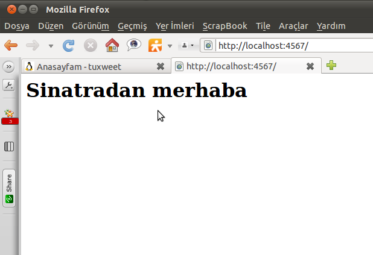
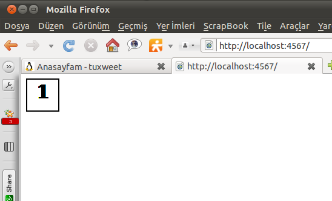
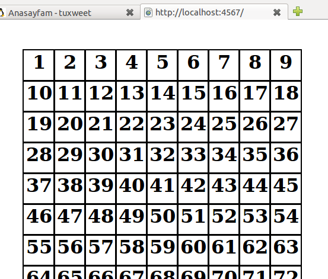
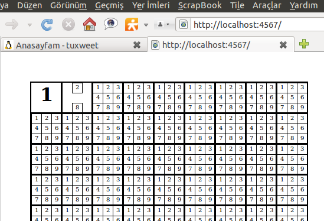
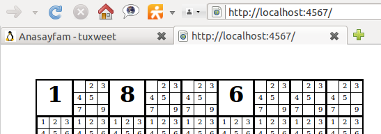

Sinatra öğreneyim derken kendimi bir anda bir uygulama içinde buldum.
Adım adım anlatmak isterim. Önce uygulama klasörünü üretip içinde
"su.rb" adında bir dosya ürettim.
require"rubygems" require"sinatra"
get "/"do haml :index end
Bunu çalıştırmaya kalkarsanız ilk önce "sinatra" gem sisteminizde yüklü
olmalıdır. Ayrıca bu şekliyle çalışmaz Çünkü giriş sayfası olarak
"views" klasörü içinde "index.haml" adına bir dosyayı yayınlamasını
istedik ama böyle bir dosya yok ki.
Uygulama klasörüne "views" adında bir alt klasör oluşturdum ve içine
"index.haml" adında bir dosya üretip içine tek satırda şunu
yazdım.
%h1 Sinatradan merhaba
Bu dosyayı da hazırladıktan sonra "su.rb" dosyasını çalıştırdığınızda
server'ın çalıştığını görürsünüz ve tarayıcınızda "localhost:4567"
adresine giderseniz ve kocaman bir "Sinatradan Merhaba" yazısı
görürseniz artık emeklemeye başladık demektir.

Bir zamanlar yakışıklı bir Sudoku çözüm yardımcısı program görmüştüm
ona benzetmeye çalışacağız. Önce görsel düzenlemeler. Sudoku tahtasında
kaç hücre var ? 81 tane. Ekrana 81 tane kutu koyacağız. "index.haml"
dosyasında olan satırı silip şunları yazalım:
- (1..81).eachdo|x| %div.b %h1 1
Ana dosya olmayıp çağrıldığı için "index.haml" dosyasında değişiklik
yaptıktan sonra server'ı tekrar başlatmak gerekmez. İlk satırın
başındaki "-" ile haml dosyasında çıktısı olmayan bir Ruby kodu
çalıştırıyoruz. Burada 1 den 81 e kadar döngü ile ekrana 81 tane div
koyup içlerine kocaman "1" yazıyoruz. Haml dosyasında "end" komutları
kullanılmaz (yapanlar Python'dan mı özendi ki?). Eee , diyeceksiniz
nerede kutular ? Kodlamaya devam edelim, tarayıcıya gelen sayfanın
kodunu incelerseniz 81 tane - class="b" - olan div görürsünüz.
Şimdi
bu divleri önce kutu olarak çerçeve içine alacağız sonra da sudoku
tahatası gibi yerleştireceğiz. Nasıl mı ? Tabii ki CSS kullanarak.
"index.haml" dosyasının sonuna aşağıdaki satırları ekleyelim.
Baştan itibaren bakarsak , ":css" ile arkasındaki girintideki
satırların css stylesheets olduğunu belirtiyoruz. Bundan sonrası
standart css komutları. Önce class="b"
olan div'leri şekillendiriyoruz. "position: absolute;" çünkü sayfada
kutuları sabit yerlere koymak istiyoruz. 2 pixel kalınlığında bir çizgi
ile div'lerimize sınır çiziyoruz. Genişlik ve yüksekliğini de 51 pixel
olarak ayarlıyoruz. En son da içine koyacağımız yazının yani sayının
tam ortada olmasını istiyoruz. Bu kadarı aslında yeterli ancak firefox
gibi bazı tarayıcılar özellik belirtilmeyince <h1>
tag'lerine
otomatik olarak marjin tanımlıyor ve bu da hücre içinde sayımızın
ortada çıkmasını engellediği için <h1> leri de "margin:
0;"
olarak belirttik. Şimdi haml dosyasını kaydedip tarayıcıyı refresh
ettiğimizde bizim 81 tane div 1 tane div olarak görünecek.

Ne oldu?
Pozisyonlarını absolute belirttik ama yerlerini belirtmediğimiz için
hepsi geldi sol üst köşeye kondu. Sayfa kaynağını incelersek bütün
divlerin sayfada halen mevcutolduğunu görürüz.
Bu durumda döngümüze bir kod ekleyip 81 hücrenin yerlerine dağılmasını
sağlıyacağız.
- (1..81).each do |x| %div.b{:id=> x.to_s, :style=>"left: #{((x-1)%9)*52+50}px; top: #{((x-1)/9)*52+50}px;"} %h1= x
Bunun için her koyduğumuz div için ayrı bir style uyduruyoruz ve
kutularımızın yerlerini net olarak belirtiyoruz. Değişikliği yapıp
sayfayı yenileyin ve sayfa görüntüsü ve kaynağında yatığımız kodun
etkisini görelim.

Artık tahta ortaya çıktı şimdi yavaş yavaş görselden kontrol kodlarına
doğru kayacağız. İstiyorumki hücrelerin içinde küçük sayılar ile olası
tüm sayılar yazılsın. Bu küçük sayılardan hangisi tıklanırsa o sayı tek
olasılık olarak kalsın ve diğer olasılıklar listeden silinsin.
Sonrasında bu tek kalan sayı en son elde ettiğimiz görüntüdeki gibi
büyük olarak gösterilsin. Bunun için ilk önce her hücrede olası tüm
değerleri içermesi için 81 elemanlık bir matris oluşturuyoruz. Server'ı
durdurup su.rb
dosyamızı şöyle düzenliyoruz:
require "rubygems" require "sinatra"
mat = [] (1..81).each do mat << "123456789" end
get "/" do haml :index, :locals=>{:mat=>mat} end
En başta tüm hücreler için 1'den 9'a kadar tüm sayılar olasıdır.
Bunları görselimizde küçük sayılar olarak çıkarmak için bu matrisi
"index.haml" dosyasına göndermemiz gerekiyor. Bu gönderimi
gerçekleştirme için matrisimizi "locals" içinde aynı isimle haml
dosyasına aktarıyoruz. Sırada haml dosyamız var:
- mat[0]="1" - mat[1]="28"
- (1..81).each do |x| %div.b{:id=> x.to_s, :style=>"left: #{((x-1)%9)*52+50}px; top: #{((x-1)/9)*52+50}px;"} - if mat[x-1].length==1 %h1 = mat[x-1] - else - (1..9).each do |xx| - if mat[x-1].include?(xx.to_s) %div.l{:style=>"left: #{((xx-1)%3)*17+0}px; top: #{((xx-1)/3)*17+0}px; "} =xx
en baş iki satırda denme için matris değerlerinden bazılarını
değiştiriyoruz ki sonucun istediğimiz gibi olmasını test edelim. Daha
sonra bu iki satırı kaldıracağız. Şimdi sayfamızı bir test edelim.

Artık uygulama şekillenmeye başladı. Bu noktada birşey dikkatimi çekti
ve deneme yaptım. Aynı uygulamayı wxRuby ile ve StaticText'ler ile
yapmaya çalıştım. Bu uygulama çok daha seri cevap veriyor. Sinatra hem
masaüstü hem web uygulamaları geliştirmek için kullanışlı ve başarılı
bir ortam. Burada geliştiricilerinden masaüstü uygulaması geliştirmek
için bir "SinatraViewer" talep etmeye karar verdim. İkinci bir grup
div'imiz oldu "class=l" bunlar büyük div'lerin içinde olası sayıları
yazan küçük kutular. Bunları da özelliklerini css içinde belirttik ve
eğer hücre için tek bir olasılık varsa hücrenin içinde <h1>
olarak büyük yazıyla bu tek olasılığı yazıyoruz. Birden fazla olasılık
varsa küçük kutular olarak tüm olasılıkları büyük kutu içinde
gösteriyoruz. İşin arkasında şöyle bir mantık olacak: Çözeceğimiz
sudokunun verilen değerlerini hücrelerde tıkladığımızda o tıklanan
değer o hücre için olası tek değer yapılacak ve bu sayede hücre tek ve
büyük bir rakamı gösterecek. Aynı satır ve sütunda bulunan eşit
değerleri otomatikman sileceğiz. Aynı dokuzlu grupta bulunan eşit
sayıları da sileceğiz. Tam tersini de yapmamız gerekiyor , yani tek
kalmış ve büyük olmuş bir sayıyı tıklayarak geri alabilmeliyiz. Bu
durumda hücre içine olası tüm değerleri küçük olarak yazmalıyız.
Bunu sağlamak için su.rb dosyasında iki yeni metod tanımlıyoruz.
get "/set/:x/:xx"do x = params[:x].to_i xx = params[:xx] mat[x-1]=xx redirect("/") end
get "/reset/:x"do x = params[:x].to_i mat[x-1]="123456789" redirect "/" end
İlk metod "localhost:4567/set/3/5" gibi adresleri algılıyor. Örnekteki
3 sayısı :x parametresine 5 sayısı da :xx parametresine aktarılıyor.
Burada matrisimizin bir hücresini yani ekrandaki kutunun bir tanesini
tek değer yapıyoruz ve tekrar index sayfasına dönüyoruz bu durumda ne
olur? O hücre (:x nolu hücre) artık :xx değerine setlenmiş olur. İkinci
metod ise çnceden setlenmiş bir hücreyi resetlemek için. Nasıl yapıyor?
Matristeki sırası verilen hücrenin içeriğine 1'den, 9'a tüm değerleri
yazıyor.
Şimdi görsel dosyamızı, bu metodları doğru çağıracak şekilde
düzenleyelim:
Çok azıcık JavaScript'i görselde ürettiğimiz div'lere ekleyip,
tıklandıklarında yeni tanımladığımız metodları çağırmasını sağlıyoruz.
E hadi, yükleyin ve de tıklayın biraz. Nasıl ? Güzel oldu mu ? Bu bile
iş görmeye başladı.
Artık görselle yapacağımız birşey kalmadı. Array içinde çalışacağız.
Önce satırlardan başlayalım aynı satırda benzer sayı olamayacağı için,
bir tanesi setlenince satırdan diğer hücrelerdekileri silelim. İlk önce
set ve reset işlemleri sonrası arrayi toparlayacak bir "check" metodu
çağıralım ve o metodun içinde array üzerinde bu işleri yapalım:
require"rubygems" require"sinatra"
mat =[] (1..81).eachdo mat <<"123456789" end
def check mat #tekleri bul singles=[] for row in1..9 for col in1..9 v = mat[(row-1)*9+(col-1)] if v.length==1 singles << (row.to_s+ col.to_s+ v) end end end #tek olanları gruplardan ayıkla for row in1..9 for col in1..9 if mat[(row-1)*9+(col-1)].length !=1#eğer hücrede 1 den fazla sayı varsa "123456789".each_chardo|x|# olası tüm sayılar için # eğer satırda o sayıdan varsa if singles.detect{|v| v =~ (Regexp.new(row.to_s+"[1-9]"+ x))} mat[(row-1)*9+(col-1)].delete! x # o sayıyı sil # tersi durumda da eğer yoksa o sayıyı ekle else mat[(row-1)*9+(col-1)]+= x end end end end end end
get "/"do haml :index, :locals=>{:mat=> mat} end
get "/set/:x/:xx"do x = params[:x].to_i xx = params[:xx] mat[x-1]=xx check mat redirect("/") end
get "/reset/:x"do x = params[:x].to_i mat[x-1]="123456789" check mat redirect "/" end
İlk önce tek değer olan hücrelerden bir liste üretiyoruz. Bu listede
satır numarası sonra sütun numarası en son da değerin olduğu
stringlerden oluşan bir array daha üretiyoruz. Mesela 5. sıranın 3.
hücresinde sadece 4 değeri varsa bu "singles" listesinde "534" olarak
yer alacaktır. Daha sonra içinde birden fazla değer olan her hücrede
olası tüm değerler için aynı satırda singles listesinden değer varsa
siliyoruz. Eğer yoksa söz konusu sayı acaba hücrede varmı. Yoksa
hücredeki olası sayılara ekliyoruz. Buradaki "singles.detect {|v| v =~
(Regexp.new(row.to_s + "[1-9]" + x))}" komut satırı ile o satırdaki
tekleri avlıyoruz.

Aynı teknikle sütundakileri de ayıklayabiliriz. Karşılaştırma komutunu :
if singles.detect{|v| v =~ (Regexp.new(row.to_s+"[1-9]"+ x)) or v =~Regexp.new("[1-9]"+ col.to_s+ x)}
yaptığımız anda sütunlar da artık kontrolün içine girdiler. Tek bir
kontrolümüz daha kaldı 3x3 gruplar. Bunlar için ilk önce o anda
baktığımız hücrenin hangi 3x3 grupta olduğunu buluyoruz.
for row in1..9 for col in1..9 if mat[(row-1)*9+(col-1)].length !=1#eğer hücrede 1 den fazla sayı varsa "123456789".each_chardo|x|# olası tüm sayılar için boxes =["123","456","789"] row_box = boxes.detect{|v| v.include?(row.to_s)} col_box = boxes.detect{|v| v.include?(col.to_s)} # eğer satırda, sütunda o sayıdan varsa if singles.detect{|v| v =~ (Regexp.new(row.to_s+"[1-9]"+ x)) or v =~Regexp.new("[1-9]"+ col.to_s+ x) or v =~ (Regexp.new("["+ row_box +"]"+"["+ col_box +"]"+ x))} mat[(row-1)*9+(col-1)].delete! x # o sayıyı sil # tersi durumda da eğer yoksa o sayıyı ekle else mat[(row-1)*9+(col-1)]+= x end
Sonra da meşhur "if" satırına 3x3 grup içindeki karşılaştırmayı da
koyuyoruz. Bu arada "detect" komutunu da bayağı bi kullandık yani.
İşte bu kadar bundan sonra sudoku çözerken kendi yaptığınız bir
yardımcınız var. Zevkle kullanın, daha da geliştirin, bana da haber
verin.